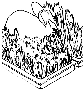
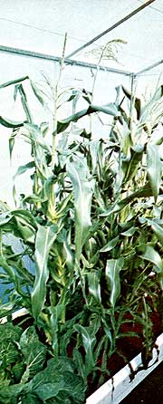
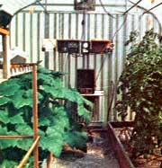
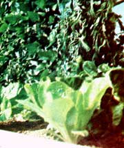
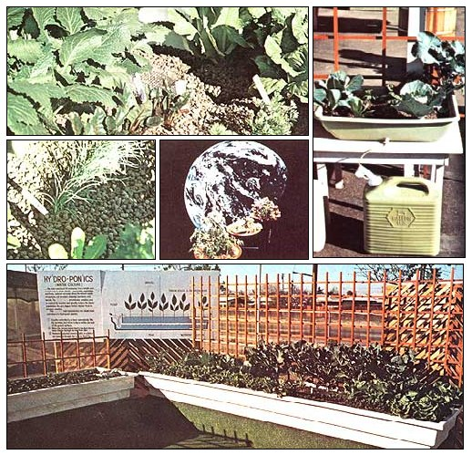
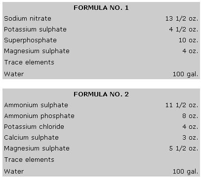
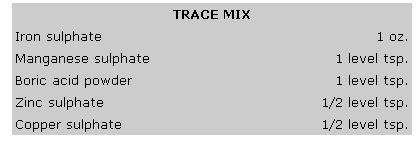
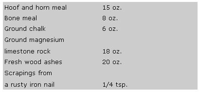
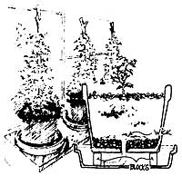
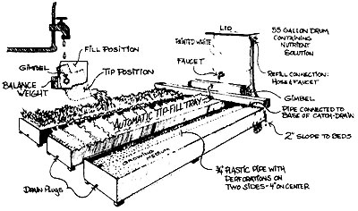

Hydroponic sprouting for animals is popular all over the world with farmers, ranchers, horsemen, and zoos. It is a compact, simple, and cheap way to produce high-quality green forage for house pets or farm animals. A space 20 feet long and 8 feet high can turn out a thousand pounds of greens every day, all year round. Any kind of grass or cereal grains can be sprouted-rye, oats, barley, alfalfa, etc. The nutrient solution increases the food value of the final product. It takes about seven to ten days to go from seed to an eight?inch mat of greens, packed with vitamins and minerals. Here's how you do it:
Sprouting is done in trays about 3 or 4 inches deep and any convenient length and width. The bottoms are lined with a thin layer of absorbent material such as burlap, foam rubber, or edible paper. Soak your seed overnight in plain water, then spread it generously and evenly over the bottom of the tray. Keep the bottom moist but not soggy with a half-strength nutrient solution. Keep the tray in a warm, semi-dark place for a couple of days. Then, when the sprouts are about half an inch high, let them have light. Add the weak nutrient solution from time to time but, after the sixth day, use plain water. When the greens are ready, just peel up the entire mat and watch your animals gobble it, sprouts, roots, seeds, and all.
If you start a new batch every day or so, you can harvest a steady supply. Trays can be stacked and grown compactly in racks. With a little thought and planning you can set up a very compact and efficient feed production unit.
Sprouting works best at a temperature of 65° to 70° F. If the weather turns very cold, you will have to provide artificial heat or quit. A lot can be done in some warm corner of your house, but in order to do large-scale production in cold weather, you must use a well insulated and heated structure.
At first thought, the practice of growing plants in an inert medium (such as gravel), feeding them periodically with dissolved nutrients, and then draining away the fertilizing solution to aerate the roots seems downright "unnatural". But people all over the world-from India (where folks frequently feed themselves from discarded containers filled with rubble) to the Netherlands Antilles (where large hydroponic farms operate with distilled seawater on otherwise useless agricultural land) to the good ole U.S.A. (where even famous organic gardeners, such as Eddie Albert, endorse hydroponics)?are finding that the arrangement does, in fact, have many practical advantages over "ordinary" soil cultivation techniques.
Take, for instance, the fact that hydroponics gardeners can often obtain a greater crop of tasty and nutritious foods (or of healthy ornamentals) from a smaller space simply because the amounts of nutrients given to a plant and the times of those nutrients' application can be controlled and adjusted and tailored to meet that particular plant's specific needs.
Hydroponics also can be successfully utilized on many tracts of land unsuitable for normal cultivation regardlessof the native soil type. In addition?and somewhat surprisingly?the system of propagation uses less water than conventional gardens (because the runoff fluid can be recycled for several days) . . . which makes it ideal for use in deserts and other water-poor regions.
Furthermore, it's obvious that the threat of soil-borne insects and diseases is reduced in a hydroponic garden, that weeds are easier to control, that the growing medium may be used time and time again without bothersome preparation . . . and that, in effect, a well kept soilless garden requires less work than its traditional counterpart.
Perhaps best of all, these many benefits apply to all hydroponics operations . . . from the ultrasimple flowerpot-fed-through-a-wick setup to the fully automated commercial greenhouse. Anyone, in short, can put them to work in his or her garden . . . whether it's large or small, simple or lavish, "just for fun" or seriously cultivated for food and/or profit. The next few pages tell you how.
Most of the material in this special feature has been excerpted from Hydro-Story (formerly Hydroponic Gardening at Home) by Charles E. Sherman and Hap Brenizer (with the permission of Nolo Press, Box 544, Occidental, Calif. 95465). Some of the following selections have been summarized by MOTHER's staff from the additional sources listed at the end of the article.
The hydroponic container can be anything which will hold up a bed of growing medium, usually about 8?9 inches deep. Galvanized iron or tin should not be used because the excessive zinc can poison the plants. Wood, plastic, concrete, roofing felt, brick, mortar, plaster, mud, clay, fiberglass, plastic resin, etc.?all are quite suitable. Redwood will not rot if set in the ground, but other wood, especially plywood, must have protection both inside and out from rot. Asphalt emulsion is a good, non?toxic preservative, and should be painted on all surfaces in contact with the ground. Also suitable are jars, boxes, flowerpots, old packing crates, or discarded buckets and barrels. In short, anything at all will do which is non-toxic to plants. The cheapest materials are those which can be found or scrounged.
Some people build troughs right on top of the ground. There should be a liner (plastic, tar paper, mud plaster, etc., work well to discourage soil-borne insects and diseases) between the bed and the soil, and the ground should be graded in an even, gentle slope for good drainage. It is essential that there be no low spots which will collect stagnant puddles. However you make them, plant beds should not be so wide that you cannot easily reach all parts while standing outside.
If you do not intend to recover and recycle the nutrient solution, the bed need not be watertight and can have any number of drains. Several drains will tend to improve aeration.
The function of the growing medium is to hold up the plant roots, while at the same time it must retain moisture and permit the roots to breathe. If the medium is too fine, it will retain too much moisture, become soggy, and suffocate the roots. If it is too coarse, it will breathe quite well, but it will also dry out very quickly. The medium must be non?toxic, and-so far as possible-inert.
The most popular and dependable growing medium is plain pea gravel (114 to 318 inch) in beds about eight inches deep. It is clean, easy to handle, and? best of all?it breathes freely. It is also quite heavy and needs to be well supported. Another quality of plain gravel is that it dries quickly and, therefore, needs to be watered at least twice each day. In fact, on hot, dry days, you may have to do three or four daily waterings.
Gravel can be purchased locally anywhere they sell building supplies, cement or landscaping materials, and usually doesn't cost more than a few dollars per cubic yard. It can also be gathered for free, if you are willing to screen and wash it.
If you want the growing medium to retain moisture for a day or two, then you must mix sand with the gravel, or use a mixture of coarse and medium sand. The finer the sand, and the more of it you mix in, the better it will retain moisture. But it will also breathe less well. In general, five parts gravel to two or three of sand will work well. In very dry climates, the ratio might be two parts coarse to three parts fine. Ultimately, it is a matter of experiment and experience.
Perlite and vermiculite are both made from natural mineral substances which are expanded into lightweight and absorbent particles. Vermiculite (expanded mica) should be mixed one-third to one-half with coarse sand; otherwise it becomes too soggy. Perlite (expanded sand) may be used alone. The main advantage of these substances is their very light weight, which makes them ideal for use in hanging baskets, on rooftops, or other places where the heavy weight of sand or gravel would cause trouble. They may be purchased at almost any garden supply yard. Be sure to get the coarse grade. Soak before planting.
Some growers have used straw, hay bales, sawdust, or peat moss. These substances are inexpensive, light, and readily available. But, being organic, they tend to break down and disintegrate, and are more likely to harbor fungus and disease organisms. They must be watched to see that they don't become soggy in spots. Wood chips (pine or cypress) are said to be very good for hydroponic systems which do not flood the container (they will float away). Soak for several days before planting, and make sure there is good drainage.
NOTE: Whenever the medium has the ability to retain moisture for more than one day, it will probably tend to build up excess levels of nutrient salts over a period of time. To prevent this, every third watering should be a plain-water flush, to wash out excess salts.
For the small grower, any water that's good enough to drink is going to work quite well in your garden, since plants have a much higher tolerance for impurities than you do. You can test water simply by putting some cut flowers in a vase of the sample being tested: if they last the usual time before wilting, the water is almost certainly safe for irrigation.
The feeding of plants is the heart of hydroponics. Feeding plants well and with personal attention is what makes your homegrown vegetables superior to almost any other produce. You can learn to adjust the nutrients to suit your climate, location, crop variety, and varying weather conditions.
The subject of nutrients is both the easiest and the hardest part of home hydroponic gardening. It is easy because there are at least two good quality commercial plant food mixes suitable for your needs:
Dr. Chataliers' Plant Food
P.O. Box 20375
St. Petersburg, Fla. 33702
and
Hydro-Garden's Chem-Gro
P.O. Box 7172
Colorado Springs, Colo. 80933
You can get good results with either of these products (or from several others), and feed a good sized garden for less than 50 cents a week. All you need to do is dissolve the dry mix in water, one pound per 100 gallons (1 or 2 teaspoons per gallon), then feed and water your plants at the same time.
When you begin your first garden, we recommend that you start with a prepared plant food mix. Later, once you get into the swing of things, you may decide to learn how to mix your own tailor?made plant food, or tune up the prepared mix you purchase.
This brings us to the hard part . . . learning to mix your own hydroponic formula. Mixing your own is cheaper, more flexible, more fun, more educational, more challenging, and more satisfying. It is also more trouble to do and more difficult to understand.
CHEMICAL MIXTURES. The plant food recipes given here are only representative of the hundreds of available formulae, but they can be counted on to give you good results. After the chemicals are carefully weighed and measured, break up any lumps, and mix very `thoroughly together into a fine powder. Never allow nutrients to get damp or wet before using. When making a solution, stir powders vigorously into water, but don't be surprised to find a certain amount of undissolved solids, especially when using superphosphate. Trace elements are given in a separate formula.
To mix less than 100 gallons of solution, merely mix and store the larger quantity of powders, then use at the rate of 4 tsp. per gallon, or 1/2 lb. to 25 gallons. For larger quantities, simply multiply the formula.
TRACE ELEMENTS are mixed separately, but must be included in each batch of nutrient solution. The various powders must be ground very fine with a mortar and pestle and mixed very thoroughly. When adding dry trace mix to a batch of dry powders which are to be used a bit at a time, the trace elements must be mixed in very thoroughly to get even distribution.
Mix well and store dry. Use 1 gram (about 1/2 tsp.) per 100 gallons of nutrient solution. For smaller batches, dissolve 112 tsp. of the trace mix into one quart of water, use 1 liquid oz. per 3 gallons of nutrient solution. Do not try to save any unused trace mix solution. (Note:Many hydroponics books suggest that the do-it-yourselfer forget the trace mix and simply add a pinch of iron sulphate?enough to cover the head of a match?to the original mixture. Quite often the other micro?nutrients will be present as impurities in the water and fertilizers.?MOTHER.)
ORGANIC FORMULAS. Another fascinating aspect of hydroponic food making is the manufacture of nutrient solutions from 100% natural/organic substances. That's right . . . organic hydroponics!
The Sharder process (a hydroponics method developed in the poor regions of India where chemical fertilizers are largely unavailable) uses a growing medium consisting of five parts small gravel and one part fine sand. Set into the beds at 2- to 3- foot intervals are sludge pots, which are any kind of covered vessel which will hold about two pounds of sludge, lined with a screen and pierced with numerous little holes in the bottom. Here is one recipe for nutrient sludge:
Mix well and dilute with water into a thick sludge, then place in the sludge pots. Use plain water in the same manner as normal hydroponic operation and the pots will slowly release their nutrients. Watch the pots carefully to keep them from running out, and also to keep them from drying out. The sludge has to be kept moist enough to release slowly through the screen-lining of the pot.
Here's another recipe which uses manure and oilcake. Oilcake is the leftovers after pressing seeds of cotton, hemp, flax, soybean, etc., for oil. It is normally used as feed, and may be obtained in feed stores.
The oilcake is matured by mixing in a little water, some ground bones, and some potash . . . then storing everything in a closed container for a couple of months (which disposes of smells). To about one pound of dried dung, add about 114 oz. of matured oilcake, then mix with enough water to form a sludge. Use as described in the previous recipe.
(See Jim DeKorne's article, "Organic Hydroponics," in MOTHER NO. 39, page 32?and the feedback in MOTHER NO. 40, page 30?for directions on how to prepare "manure tea" . . . another useful organic nutrient solution. Perhaps the "Manure Teapot" idea described in MOTHER N0. 33, page 24, could also be used successfully in a hydroponics operation.?MOTHER.)
Assuming that you now have a container of growing medium in a sunny location, the only remaining essential step between you and a flourishing garden is to put into operation some method or routine which will deliver the nutrient solution to the plants. There are various ways in which this can be done, but the goal of all is the same: TO KEEP THE ROOTS DAMP BUT NOT SOGGY.
When checking for proper moisture, look beneath the top layer of medium, into the center of the bed (where the roots are), and keep a sharp eye on the plants themselves.
Try to keep the surface of the medium dry. In those systems which flood the beds, there should be an overflow tube at a level of 1" below the surface of the medium. This will help cut down on fungi and algae, and will keep from washing surface debris down into the medium.
HAND WATERING. This method requires that some person go to the garden whenever it needs to be watered in order to turn the handle, tip the bucket, or in some way pour, sprinkle, or spray the bed with nutrient solution. This method involves the least paraphernalia, and is the most direct, cheapest, and easiest to set up. It is also the most demanding of personal attention. If you don't want to water once or twice each day, you will have to use some growing medium other than plain gravel.
WICKS. This excellent hydroponic method is the very best thing for small containers such as hanging baskets, window boxes, pots, patio gardens, or any container under about 1?112 by 2 feet by 6" deep. The main limitation on this method is that it cannot be used to grow large plants or those with lush foliage, as it does not furnish moisture fast enough. By the wick method of feeding, the nutrient solution is stored directly under the growing medium, usually in some arrangement of nested pots, and drawn up through wicks made of glass wool or similar material.
The wicks should be long enough so that about four inches hangs down into the nutrient solution and another four inches extends above the level of the bottom of the growing bed.
The wicks are pre-soaked, then drawn into the bed through holes which are just the same size as the wick. Put down about one-quarter or one-third of the medium, divide each wick into four strands, spread the strands around evenly, then cover with the remaining medium. Wicks should be about eight inches apart, and the medium no more than six inches deep. The best medium for this method would be perlite, vermiculite, or plaster sand.
This method is utterly convenient, simple, and easy to operate (all you have to do is refill the tanks with nutrient solution from time to time).
(Check MOTHER NO. 32, page 49, for a longer discussion of this "Sow and Forget Indoor Planting -Method".MOTHER.)
DRIP METHOD. This method is used quite a lot by commercial growers. There are many variations to the idea, but basically it involves a tank of nutrient solution which is elevated above the bed and allowed to flow out through tubes which may be either over the surface of the bed or buried in the medium. A home-scale version of the drip method looks something like intravenous feeding in a hospital, with a tube running from a bottle of nutrient solution into each pot and container. At each pot there will be a little petcock, squeeze-clip, or valve which lets out a constant slow drip. Excess fluid is collected in saucers or trays under each pot and recycled.
PUMP AND TIMER. This is the All American Hobby Greenhouse Favorite. A reservoir (sump) of nutrient solution is placed below the level of the bed, and a submerged pump, activated by a timer, automatically floods the beds two to four times each day. The pump is timed to stay on however long is necessary to flood the beds, then the fluids are allowed to slowly drip out and drain back into the reservoir. Pumps are rated by the number of gallons they will pump per hour. Get one big enough to fill all your beds in one-half hour.
There must be an overflow tube in each bed, at a level one inch below the surface of the medium, to prevent flooding of the surface of the bed. There must also be some sort of screen or filter to keep grit out of the pump. The nutrient tank must contain at least 50% more than the volume of all the beds, to accommodate losses due to evaporation and transpiration.
(Alexandra and John Dickerman, authors ofDiscovering Hydroponic Gardening, mention yet another way to operate your hydroponic garden: the standing solution method. In this system, plant roots are always submerged in the nutrient mixture, and aeration is provided when air is bubbled into the liquid.?MOTHER.)
Once your hydroponic setup is complete, you may find the following growing tips (suggested in the many books listed at the end of this special article) helpful in maintaining a healthy and productive garden.
• Locate your indoor hydroponic plot in a sunny place, or supplement the natural light your plants receive with fluorescent tubes.
• Change your system's nutrient solution as often as necessary (generally every 7 to 14 days) to keep your plants healthy. Experience will teach you when to drain the old and put in a fresh mixture.
• During heavy rains, protect outside hydroponic gardens with a canopy to prevent excess flooding. If the fertilizer solution in the beds becomes too diluted, apply extra nutrients until the plants perk up.
City folks may find it helpful to let treated tap water sit in an open drum for a few days until the chlorine can dissipate.
• If your hydroponic garden grows poorly in spite of your watchful care, you may have especially alkaline or hard water (both of which keep plants from using all the nutrients available). Consult an authoritative book to correct the problem.
Most larger seeds?and a few smaller ones (such as lettuce and spinach)?can be sown directly in a hydroponic bed or sprinkled right on top of the growing medium. Other plants may be started in a pan of damp sand and then transplanted?with a ball of sand still around their roots?to the larger container (be sure to water these seedlings carefully for the first few days until their roots become established). Or begin the seeds in a pocket of sand or a starter peat pellet embedded directly in the hydroponic bed. (A discussion of peat pellets and directions for making your own appear in MOTHER NO. 8, page 12, and MOTHER NO. 9, page 84. See also Derek Fell's remarks about the pellets in his article in this issue.)
Never transplant seedlings grown in soil to your hydroponic garden unless you first wash their roots bare with a gentle spray of water.
• Since roots of hydroponically grown plants do not have to spread out far in search of food, make your limited growing area more intensively productive. First off, space plants about 50% closer than the seed packages recommend. Also choose varieties of flowers and vegetables that can be trained vertically (or grow climbing plants in the midst of bushy ones). And finally, prune foliage carefully to admit the maximum amount of light and air to all lower leaves.
• Test the pH (the acid/alkaline balance) of your nutrient solution regularly. Nitrazine paper, which is available at most drug stores, seems to be the easiest indicator to use: simply dip a strip into the fluid and compare its color to the chart on the side of the container. Maintain the pH measure between 6 and 7 on the 14-point scale by adding white vinegar (an acid) or baking soda (an alkali) to the liquid as Jim DeKorne suggests in The Survival Greenhouse.
• Keep your soilless garden free of dirt and rubbish which might encourage insects and diseases.
• When plants have finished flowering and fruiting, pull them gently from the growing medium (wait until the bed is dry so you'll disturb other plants less) and shake any particles from their roots. Flush the growing medium with clean water and plant the bed again.
• Consider sterilizing your beds if you've had any disease or insect pests the preceding season. Sherman and Brenizer (Hydro-Story, formerly Hydroponic Gardening at Home) suggest flooding your container with swimming pool chlorine (13 ounces per 100 gallons) and letting the solution stand for 24 hours. Then unplug the drains and flush the bed with plain water several times over the next two days.
• Be creative! Place several plants in holes running up a gravel-filled pipe, put a few of the tubes in a nice frame . . . and you've got an attractive, space-saving"vertical garden". Or try raising cantaloupes and other vine crops on your roof. (Raymond Bridwell's directions for these schemes-and brochures on nutrients, light and planting arrangements, and other aspects of hydroponics?can be obtained for 90 cents each from King Industries, P.O. Box 21, Loma Linda, Calif. 92354.)
• Consult MOTHER'S Mini-Manual on Greenhouse Gardening in Issue No. 42, page 71. It contains additional suggestions on pollination, intensive planting, regulating temperature and humidity, controlling insect and disease pests, building and maintaining a greenhouse, and many other aspects of indoor gardening that can also be used in a hydroponic system.
|
 PHOTO COURTESY OF KING INDUSTRIES ILLUSTRATION BY JIM LESLIE |
 PHOTO COURTESY OF ENVIRONMENTAL DYNAMICS |
 PHOTO COURTESY OF KING INDUSTRIES |
|
 |
 |
 |
|
 |
 |
 |
|
 |
|
|